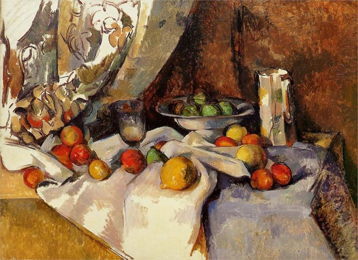

Malarskie krajobrazy Rilkego
Cézanne
Jak niemanierycznie odmienne są te obrazy, jak bardzo pozbawione troski o oryginalność, przepełnione pewnością, by każdym zbliżeniem do tysiącrakiej natury nie zagubić się, a raczej, by wobec różnorodności zewnętrznego świata, poważnie i sumiennie odkrywać niewyczerpane bogactwo własnego wnętrza.
— Rilke w Listach o Cézannie (przeł. B. Antochewicz)
Paul Cézanne „Martwa natura z jabłkami”, 1871, Staatliche Museen zu Berlin, Gemäldegalerie, Berlin